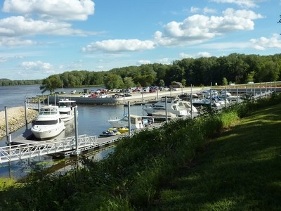

Guttenberg Iowa is a small river town located between two bluffs in the Mississippi River Valley. The town is rich in German culture and is the largest town in Clayton County Iowa with a population of about 1,900. This small town has a friendly laid-back atmosphere, where visitors can enjoy life at a slower pace. |
|---|
Prairie La Porte, meaning "the door to the prairie," was the first name given to Guttenberg by French explorers in 1673. The Guttenberg area was a site of Sac and Fox campgrounds until 1823. The Louisiana Purchase of 1803 transferred ownership to the United States and the Black Hawk Purchase of 1833 finally opened the area for legal settlement. |
|---|
Guttenberg's riverfront location was pivotal in its early commercial development. The town first served as a focal point for westward settlement and as an early governmental and administrative center. It was the early location of the county seat from 1838-1843. Guttenberg served as a supply center for the general area until the Civil War, when railroads and an interior road system combined to detract from Guttenberg's role as a market center.
The earliest businesses included general supply stores, blacksmith, wagon shops, and hotels. The loss of the county seat in 1843 slowed growth and the population declined. Economic revival began in 1845 with the influx of hundreds of German immigrants under the auspices of the Western Settlement Society of Cincinnati and continued with the development of the lead mining industry along Miners Creek.
Guttenberg incorporated in 1851. The influence of the German population was best indicated by the construction during the period between 1845 and 1865 for over one hundred stone buildings. The bluff limestone was easily obtained and good, local clay and lime for construction was available. Four large riverside warehouses opened and a large flour mill, stores, and hotels appeared during this period. The steamboat trade deposited merchandise and picked up farm produce, milled flour and lead ore.
Guttenberg has more historic sites per capita than any other community in Northeast Iowa. The last remaining lockmaster's house on the Upper Mississippi and the Historic Lakeside Ballroom are two places of note. |
|
|---|---|
Rent a boat and fish for walleye, catfish, bass species, sun fish, and many other game species in pool #10 of the Mississippi River. The Guttenberg DNR Aquarium and Fish Management Station is a great place to take children to get hands-on contact with river catfish and turtles. When not on the Mississippi River, visitors enjoy walking and biking one of the longest riverfront trails in Iowa (2.2 miles), walking on the shorter 0.3 mile Buechel Hill Trail and on the 11-acre Big Springs Nature area north of town. |
 |
|
Guttenberg offers boundless recreation opportunities and breathtaking views of the Mississippi River and surrounding bluffs. |
Joe's Pizza was established in 1982 in Jesup, Iowa. Joe's has always been family owned with attention given to making quality pizza for customers who want the very best. Richard Dlouhy started working at Joe's Pizza in Guttenberg as a kid helping his mother in 1997. Richard took over full ownership in 2008 and continues to carry on the tradition of serving the highest quality pizza, chicken and ice cream.
With the best Ice Cream from Chocolate Shoppe I can promise you will find a flavor that you will love. A few flavors change but the local favorites are always on hand and you will never be disappointed. The atmosphere is very casual and from the moment you walk in you will feel like you have been here thousands of times. Richard and his staff always go out of their way to make your experience something you will remember. If you would like to dine outdoors, you can get your food to-go and walk across the street to the public park and find a picnic table for you and your family and enjoy the view of the Mighty Mississippi. It is a wonderful spot to enjoy an ice cream cone with the kids and watch the barges lock through the dam.